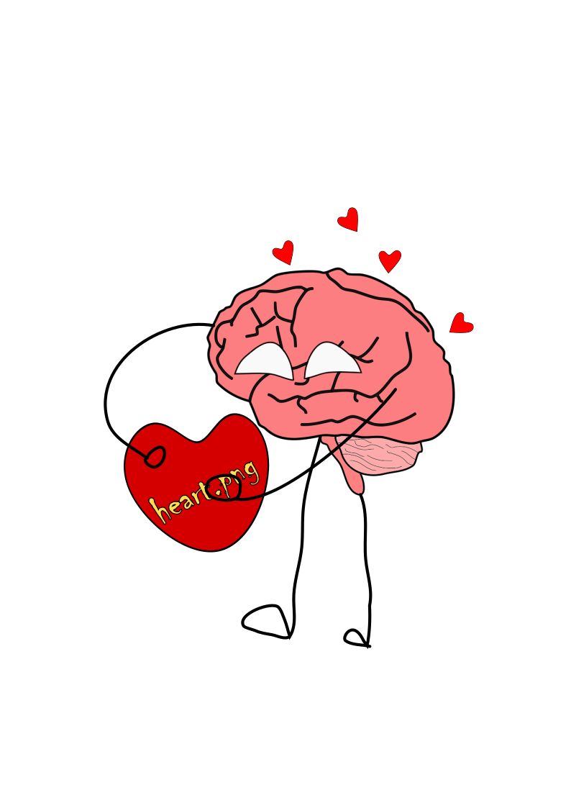
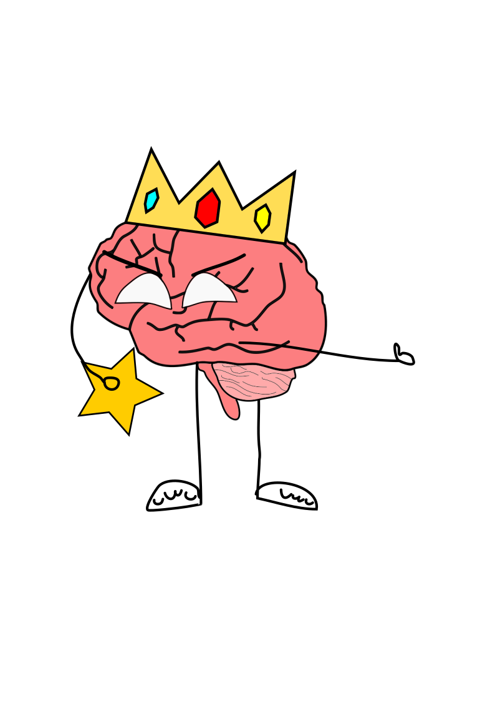

Bienvenidos

Bienvenidos a mi página web =3
Hola, aquí yo vendré con esta página sobre los trastornos mentales y de cómo pueden afectar a una persona mentalmente y hasta, en casos comunes, físicamente, por no proteger, por así decir, su cuerpo al dejarse exponer tan fácilmente y dejarse caer sobre eso la enfermedad mental.

¿A qué quiero llegar?
Lo que quiero llegar es mostrar, a través del progreso en la página, cómo realmente una enfermedad mental, aun siendo solo por costumbres o hábitos, puede destrozar a una persona igual que una enfermedad mortal, ya que si no se cuida y no es consciente sobre lo que quiere...